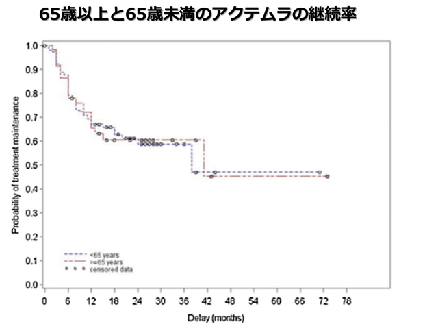

対オレンシア①高齢者
アクテムラの継続率と安全性は65歳以上と65歳未満で同等
【概要】
- ●フランスの5病院での2009年~2012年のレトロスペクティブ研究
- ●日常臨床下で65歳以上と未満のRA患者222名の有効性と安全性を調査する
- ●EULAR Good responseの割合は65歳以上40.7%・65歳未満61.0%と有意差があったが、継続率に違いはなかった
- ●８ヵ月時点の継続率は75%、6ヵ月で77名(34.7%)が脱落理由は有害事象40.3%、効果不十分31.2%等両群の安全性に有意差無し

- ⇒高齢者へのアクテムラ投与は65歳以下と同様の安全性が期待でき、治療継続が可能である。
Pers YM, et al. Joint Bone Spine. 2015 Jan;82(1):25-30.